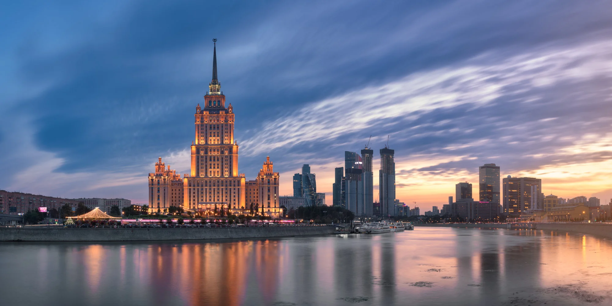

HOTÉIS 

Escolher bem onde se hospedar é essencial para aproveitar ao máximo sua viagem. Em Moscou, você encontrará
opções que vão desde hotéis luxuosos próximos à Praça Vermelha até acomodações mais econômicas, ideais para
quem quer gastar menos e ainda assim ficar bem localizado.
Nesta página, reunimos as melhores alternativas
de hospedagem para diferentes perfis de viajantes — seja para quem busca conforto, praticidade ou economia.

Four Seasons Hotel Moscow ★★★★★
Descrição: Sofisticação máxima no coração da cidade, com vista para o Kremlin e Praça Vermelha.
Comodidades: Spa, piscina coberta, restaurantes gourmet, Wi-Fi
$ A partir de US$ 450/noite
Centro, ao lado da Praça Vermelha
The Carlton, Moscow (ex-Ritz-Carlton) ★★★★★
Descrição: Hotel icônico de luxo com rooftop bar panorâmico e suítes elegantes.
Comodidades: Spa, academia, restaurantes, serviço 24h
$ A partir de US$ 400/noite
Próximo à Praça Vermelha e ao Teatro Bolshoi


Radisson Royal Hotel (Hotel Ukraina) ★★★★★
Descrição: Localizado em um dos arranha-céus históricos de Moscou, une tradição e elegância.
Comodidades: Piscina, spa, restaurantes, Wi-Fi
$ A partir de US$ 180/noite
Margens do Rio Moscou, com fácil acesso ao centro
Hotel Baltschug Kempinski Moscow ★★★★★
Descrição: Luxo clássico com vista privilegiada para o Kremlin e a Catedral de São Basílio.
Comodidades: Spa, piscina, Wi-Fi, café da manhã incluso
$ A partir de US$ 250/noite
Centro histórico de Moscou


Lotte Hotel Moscow ★★★★★
Descrição: Hotel moderno e sofisticado com infraestrutura premium e restaurantes renomados.
Comodidades: Spa, piscina, Wi-Fi, restaurantes premiados
$ A partir de US$ 300/noite
Rua Novinskiy Boulevard, próximo a lojas e atrações
Hilton Moscow Leningradskaya ★★★★☆
Descrição: Hotel histórico em um dos edifícios das "Sete Irmãs", combinando elegância e comforto.
Comodidades: Academia, Wi-Fi, restaurante, bar
$ A partir de US$ 120/noite
Próximo às principais estações de metrô

.jfif)
StandArt Hotel Moscow (Boutique) ★★★★☆
Descrição: Primeiro hotel design da Rússia, com interiores modernos e atmosfera criativa.
Comodidades: Spa, restaurante, Wi-Fi, academia
$ A partir de US$ 160/noite
Próximo à Rua Tverskaya
AZIMUT Hotel Smolenskaya Moscow ★★★★☆
Descrição: Opção de quatro estrelas confortável, com boa vista da cidade.
Comodidades: Wi-Fi, restaurante, academia
$ A partir de US$ 90/noite
Região de Smolenskaya, perto do metrô


Moss Boutique Hotel ★★★★☆
Descrição: Hotel intimista e elegante, ideal para quem busca experiências exclusivas.
Comodidades: Wi-Fi, bar, restaurante, serviço personalizado
$ A partir de US$ 140/noite
Centro de Moscou, perto da Praça Pushkin
Barvikha Hotel & Spa ★★★★★
Descrição: Resort de luxo afastado do centro, perfeito para relaxar em meio ao verde.
Comodidades: Spa completo, piscina, restaurante, suítes espaçosas
$ A partir de US$ 350/noite
Barvikha, nos arredores de Moscou